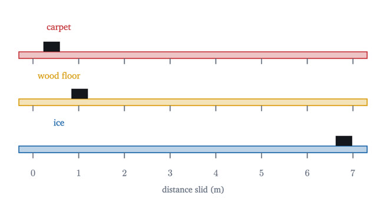
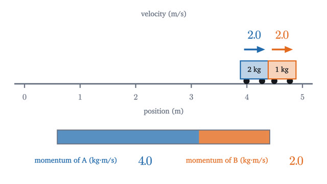
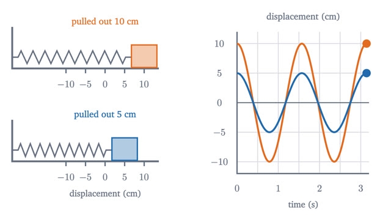
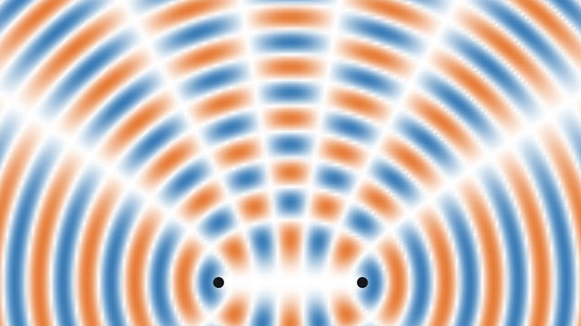

Physics
Motion, force, energy and waves, with the mathematics drawn in.
Start with lesson 1-
1
Position, velocity and acceleration: reading motion graphsSlope turns a position graph into velocity and velocity into acceleration; area goes back. The constant-acceleration equations come from one trapezoid.

-
2
Newton's second law, F = ma: what force really doesForces change an object's velocity; none is needed to keep it moving. Newton's three laws, free-body diagrams, the incline and the Atwood machine in full.

-
3
Projectile motion: dropped and fired bullets land togetherGravity acts only on the vertical part of a projectile's motion. From that come the parabola, the time of flight, the range, and why 45 degrees goes farthest.

-
4
Conservation of energy: a roller coaster's bookkeepingWork, kinetic and potential energy, and the work-energy theorem, derived from F = ma and used to find a coaster's speed anywhere and the height a loop needs.

-
5
Momentum and collisions: what survives a crashMomentum, impulse and Newton's third law, and how they fix the outcome of sticky and bouncy collisions when energy alone gives the wrong answer.

-
6
Simple harmonic motion: springs and pendulumsWhy a mass on a spring takes the same time per swing however far it is pulled: Hooke's law and the shadow of circular motion, and why a pendulum nearly does.

-
7
Waves and interference: how two ripples can cancelWhat a wave is, why its speed is frequency times wavelength, and how adding waves gives the quiet lines of an interference pattern and the notes of a string.

-
8
Circular motion, gravity and why the Moon doesn't fallThe acceleration v²/r of circular motion, derived from the velocity triangle, and what it says about satellites, Kepler's third law and weightlessness.